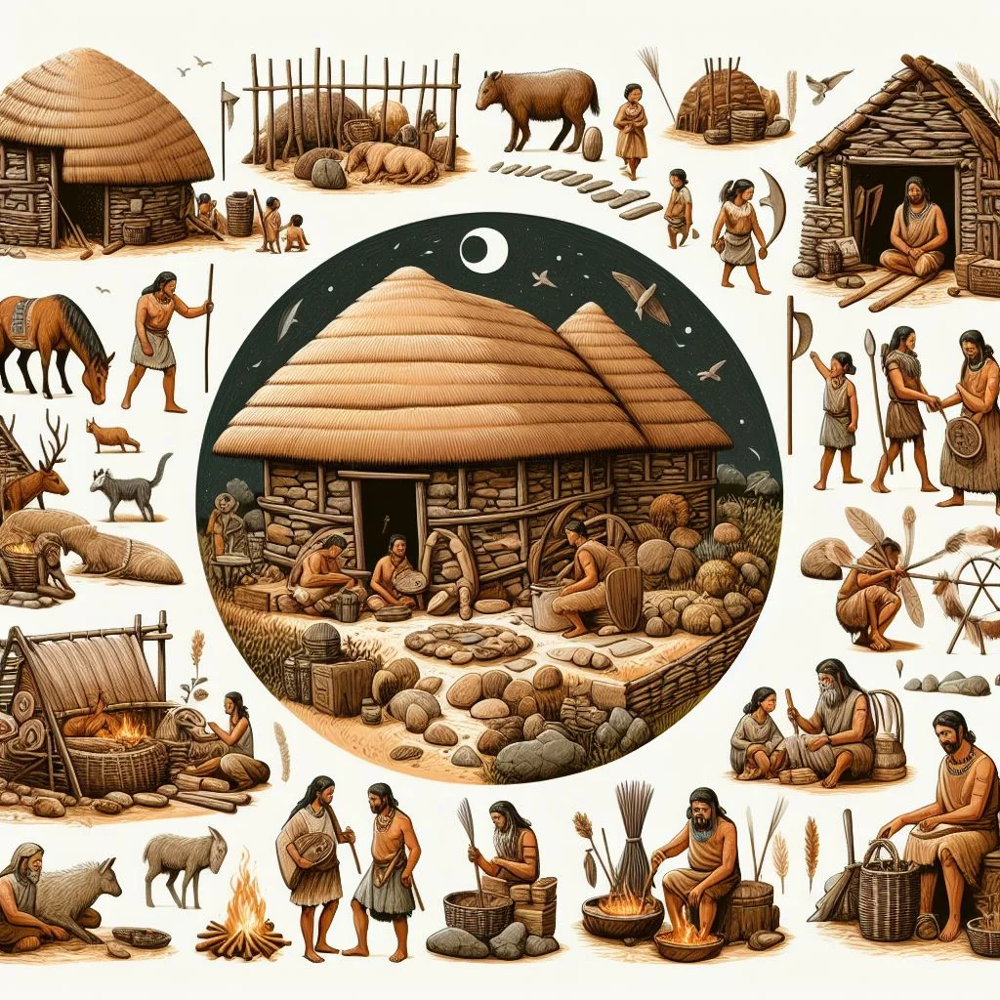

O Neolítico (ou Idade da Pedra Polida) representa uma das maiores transformações da história da humanidade. Se no Paleolítico o ser humano dependia inteiramente do que a natureza oferecia de forma espontânea, no Neolítico ele aprendeu a produzir o próprio alimento.
Essa grande reviravolta é conhecida como Revolução Agrícola e mudou para sempre a organização social e o modo como vivemos até hoje:
Prof. Marcelo Oliveira — História Geral.
Questão 1 (Enem - Adaptada)
A passagem do modo de vida caçador-coletor para o modo de vida sedentário e agrícola, ocorrida durante o período Neolítico, provocou profundas alterações nas estruturas sociais e econômicas das comunidades humanas. Uma das principais consequências desse processo foi:
A) A intensificação do nomadismo em busca de novas fontes de caça em regiões distantes.
B) A abolição completa de qualquer forma de divisão social do trabalho dentro dos clãs.
C) A fixação dos grupos humanos em aldeias permanentes, viabilizada pelo controle da produção de alimentos.
D) A extinção do uso de ferramentas de pedra, substituídas imediatamente pela metalurgia do ferro.
E) O abandono da domesticação de animais devido aos riscos de transmissão de doenças.
Questão 2 (Enem - Adaptada)
"A chamada Revolução Neolítica não aconteceu da noite para o dia, mas representou uma mutação profunda na história humana. Ao dominar a terra e os animais, o homem deixou de ser um mero predador do meio ambiente para se tornar um produtor, alterando a paisagem e o seu próprio destino."
Considerando as inovações técnicas e sociais do Neolítico, essa transformação econômica resultou diretamente em:
A) Geração de excedente alimentar, permitindo o armazenamento de recursos, o crescimento demográfico e o surgimento do comércio local.
B) Retração drástica da população mundial devido à escassez de fontes naturais de água potável.
C) Centralização imediata do poder político nas mãos de imperadores divinizados com exércitos profissionais.
D) Proibição do uso de cerâmica e de tecidos de algodão ou linho nas aldeias primitivas.
E) Retorno definitivo ao isolamento absoluto entre as comunidades, sem trocas comerciais ou culturais.